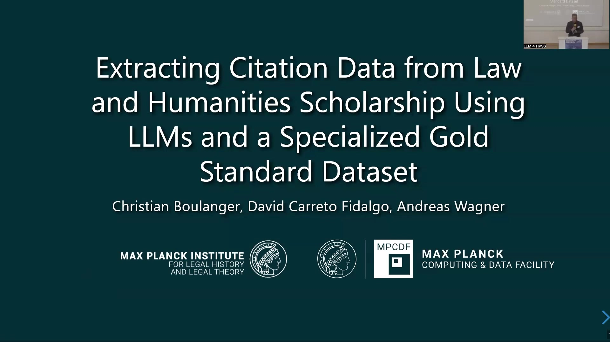
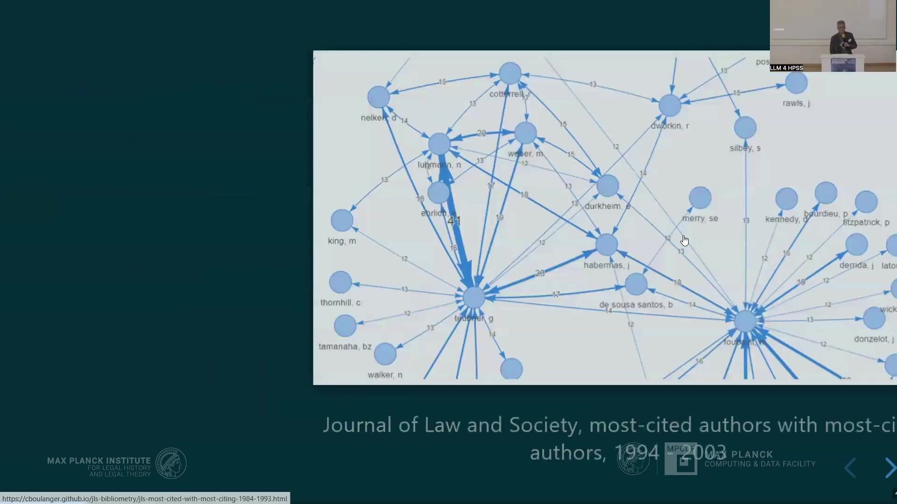

10 Extracting Citation Data from Law and Humanities Scholarship
The project addresses the problem of extracting citation data from Law and Humanities scholarship, which heavily relies on complex footnotes. Existing bibliometric databases (Web of Science, Scopus, OpenAlex) have extremely poor coverage for historical and non-English SSH publications, are expensive, and have restrictive licenses. Traditional machine learning tools like ExCite perform poorly on complex footnote structures, exhibiting low extraction and segmentation accuracy (e.g., ExCite …
11 Extracting Citation Data from Law and Humanities Scholarship
11.1 Overview
The project addresses the problem of extracting citation data from Law and Humanities scholarship, which heavily relies on complex footnotes. Existing bibliometric databases (Web of Science, Scopus, OpenAlex) have extremely poor coverage for historical and non-English SSH publications, are expensive, and have restrictive licenses.
Traditional machine learning tools like ExCite perform poorly on complex footnote structures, exhibiting low extraction and segmentation accuracy (e.g., ExCite accuracy around 0.22-0.26 for extraction). Footnotes in SSH are often complex, containing commentary, abbreviations, and multiple references (“footnotes from hell”). Creating training data for traditional methods is laborious using annotation tools.
Large Language Models (LLMs) and Vision Language Models (VLMs) show promise for handling messy textual data and PDFs, but the primary challenge is trusting the results due to potential hallucinations (e.g., inventing non-existent citations, as seen in legal cases).
A robust testing and evaluation solution is required, necessitating a high-quality gold standard dataset, a flexible evaluation framework adaptable to fast-moving technology, and solid testing algorithms for comparable metrics.
The project develops a specialized gold standard dataset encoded in TEI XML, chosen for its well-established standard, detailed specification covering phenomena beyond mere reference management (including context for citation intention), and compatibility with existing digital humanities corpora and tools like Grobid. The dataset creation involves stages: screenshot of the PDF, segmentation of reference strings from non-reference text within footnotes, and parsed structured data.
The dataset currently includes over 1,500 references from open access journals to enable full publication from PDF to parsed data structures.
A Python package named Llamore (Large Language Models for Reference Extraction) is developed. Llamore is lightweight, acting as an interface to various LLMs/VLMs (compatible with OpenAI API, covering Ollama, VLLM, etc.). It takes text or PDFs as input and outputs references in TEI XML format.
It also provides an evaluation function using the F1 score metric to compare extracted references against gold standard references. The F1 score calculation involves counting exact matches of bibliographic elements (analytic title, monographic title, surname, publication date, etc.) and dividing by the number of predicted and gold elements.
The problem of aligning extracted references to gold references is solved using an unbalanced assignment problem solver (from SciPy), maximizing the total F1 score with unique assignments and penalizing missing or hallucinated references with an F1 score of zero.
Evaluation results show that Llamore performs comparably to Grobid on biomedical datasets (PLOS 1000) but significantly outperforms Grobid on the specialized humanities dataset, where Grobid struggles due to being out of distribution. While LLMs require significantly more compute than Grobid, their performance on complex SSH footnotes is superior.
Error analysis suggests issues include difficulty distinguishing volume/page numbers, misclassifying names in titles as authors, and misinterpreting terminology like “idem” as authors. The required F1 score for “good enough” data depends on the analysis goal (tendencies vs. accurate data). The current focus is on achieving reliable results before scaling up to avoid interpreting hallucinated data.
Future work could involve retrieval augmented generation (RAG) using disciplinary databases for validation and potentially human-in-the-loop workflows for error correction and iterative model improvement. The project aims for both specific research results (e.g., citation trends in a specific journal) and generic applicability to other projects.
11.2 Project Scope and Problem

The project focuses on extracting citation data specifically from Law and Humanities scholarship, a domain characterized by extensive and complex footnotes. The primary challenge involves parsing these footnotes using Large Language Models (LLMs) or other algorithmic approaches.
The extracted data is intended for generating citation graphs, which are valuable tools in intellectual history and the history of science. Citation graphs enable the discovery of patterns and relationships within knowledge production, facilitate the reconstruction of intellectual influences, and allow for the measurement of the reception of specific ideas. An example application involves tracking the change in most-cited authors over time, such as an analysis conducted for the Journal of Law and Society between 1994 and 2003.
11.3 Problem: Bibliometric Database Coverage
A significant problem is the extremely poor coverage of historical Social Sciences and Humanities (SSH) scholarship in existing bibliometric databases. The primary databases in this space include Web of Science, Scopus, and OpenAlex. Web of Science and Scopus are characterized by high costs and very restrictive licenses, making dependence on them undesirable.
While OpenAlex is preferable due to its open access nature, it also lacks sufficient coverage for the specific content required for this research.
Common coverage gaps across these databases for SSH literature include a lack of inclusion for journals not classified as “A-journals,” insufficient data for publications from the pre-digital age, and a general lack of coverage for non-English language content.
An illustrative example is the Zeitschrift für Rechtssoziologie, a German journal established in 1980. Analysis of available citation data by decade shows very low coverage across Dimensions, OpenAlex, and Web of Science for the decades before the 2000s. Although coverage improves somewhat after 2000, it remains incomplete, particularly for Web of Science.
Several factors contribute to this poor coverage in SSH. Firstly, there is a perceived lack of financial incentive compared to STEM, medicine, and economics, which are typically well-represented.
Secondly, these databases often focus on metrics like the “impact factor,” which aligns with science evaluation goals but not necessarily with the objectives of intellectual history research. Finally, the literature itself presents a technical challenge due to the extensive use of complex footnotes, which are difficult for automated systems to process accurately.
11.4 Complex Footnotes and Training Data

Problem 2 concerns the nature of the footnotes themselves, often referred to as “footnotes from hell.” These are typical of humanities scholarship and contain complex structures, including commentary, messy formatting, abbreviations, parenthetical information, and multiple distinct references embedded within surrounding non-citation text. An example image displays a scanned page with a footnote exhibiting these characteristics, featuring content in both German and English, various abbreviations, and multiple citations within a single numbered entry.
Problem 3 highlights the difficulty in creating training data for citation extraction. The traditional approach involves a laborious manual annotation process. A web-based annotation tool is utilized for this purpose, allowing users to highlight segments of text within footnotes and assign specific labels corresponding to bibliographic elements such as:
Author
Title
Date
Journal
Volume
Pages
DOI
ISBN
URL
BackRef
Signal
Ignore
and indicators for whether a segment is a reference or not. This manual annotation requires a significant investment of time and effort.
11.5 Limitations of Existing Tools

Problem 4 identifies a critical limitation: existing tools designed for citation extraction are unable to handle the complexity of humanities footnotes effectively. These traditional tools typically rely on machine learning methods such as Conditional Random Forests. However, their performance on the specific type of complex footnote data encountered in this domain is poor.
An example illustrating this limitation is the performance of the tool ExCite. Its performance is evaluated using metrics including Extraction Accuracy and Segmentation Accuracy across different training data configurations: Default, Footnoted, and Combined. The results show consistently low accuracy scores.
With Default training data, Extraction Accuracy is 0.24 and Segmentation Accuracy is 0.37. Using Footnoted training data yields Extraction Accuracy of 0.26 and Segmentation Accuracy of 0.37. The Combined training data results in Extraction Accuracy of 0.22 and Segmentation Accuracy of 0.47. These figures, sourced from Boulanger/Iurshina (2022), Table 1, demonstrate that ExCite, and by extension other similar traditional tools, struggle significantly with this task, regardless of the training data used.
11.6 LLMs as Solution: The Trust Problem
The question arises whether Large Language Models (LLMs) can offer a solution to the challenges of extracting citation data from complex footnotes. Early experiments conducted in 2022 using models such as text-davinci-003 demonstrated the potential power of LLMs to extract references even from messy textual data. Newer models promise even better performance.
Furthermore, Vision Language Models (VLMs) possess the capability to process PDFs directly, which is advantageous given that source materials are frequently available in this format.
Potential methods for leveraging LLMs include prompt engineering, Retrieval Augmented Generation (RAG), and finetuning. However, a primary concern is the trustworthiness of the results produced by these models. A significant problem is the potential for hallucination, where LLMs invent information that does not exist, including fabricating citations.
A notable example illustrating this issue involved a lawyer who used ChatGPT for a federal court filing and cited non-existent cases invented by the model, resulting in severe consequences. This highlights the critical principle that analysis should not be undertaken unless the results are known to be correct and sufficient validation data is available to verify accuracy.
11.7 Solution Requirements

To address the trust issue and enable reliable citation extraction, a robust testing and evaluation solution is required. This solution must meet several key requirements.
Firstly, it necessitates a high-quality Gold Standard dataset against which extracted results can be compared.
Secondly, it requires a flexible framework capable of adapting easily to the rapidly evolving technology landscape of LLMs and VLMs.
Finally, the solution must incorporate solid testing and evaluation algorithms designed to produce comparable metrics, allowing for objective assessment of different approaches and models.
11.8 Gold Standard Dataset

The project involves compiling a high-quality gold standard dataset intended for both training and evaluation purposes. The chosen encoding standard for this dataset is TEI XML. This standard was selected because it is well-established and precisely specified within the humanities and digital editorics fields.
TEI XML is more comprehensive than simpler bibliographical standards like CSL or BibTeX, covering a wider range of phenomena and extending beyond basic reference management. It allows for encoding contextual information, which can be valuable for tasks such as classifying citation intention.
Furthermore, adopting TEI XML enables the project to potentially utilize existing text collections and corpora from other digital editorics projects that publish their source data, including detailed reference encodings, in this format. Such existing corpora can also serve as resources for testing the generalization and robustness of the developed mechanisms.
The dataset establishment process is currently underway. The encoding involves several stages, illustrated by an example of footnote number four. These stages include capturing a screenshot of the PDF source, segmenting the text to distinguish the actual reference string from surrounding non-reference text within the footnote (such as introductory phrases), and finally creating a parsed structured data representation of the reference.
Midway through the project, the strategy for building the dataset was adjusted. Initially, the focus was on data directly relevant to the primary research question. More recently, the decision was made to include the source PDFs and structure the dataset to enable the use of Vision Language Models (VLMs). The goal is to be able to publish the entire dataset pipeline, from the source PDFs through to the parsed data structures.
To facilitate this, the selection of source journals was changed to focus on open access publications. The dataset currently includes the encoding of over 1,500 references. It is noted that this count refers to occurrences, meaning the same work referenced multiple times is encoded separately to capture the specific context of each mention.
A significant benefit of using the interoperable TEI XML standard is the availability of numerous tools. A particularly relevant tool for this project is Grobid, a popular system for reference and information extraction. Grobid utilizes TEI XML for its own training and evaluation processes. By using the same data format, the project can directly compare its performance against Grobid, potentially use Grobid’s existing training data, and contribute the newly created dataset to the Grobid development team.
11.9 Llamore: Extraction and Evaluation Tool

The project developed a tool named Llamore, which stands for Large Language Models for Reference Extraction. Llamore is implemented as a small Python package. Its core capabilities include taking text or PDF documents as input, extracting references from them, and exporting these extracted references as TEI formatted XML files.
Additionally, if gold standard references are provided, Llamore can evaluate the performance of the extraction process.
The design of Llamore prioritized two main objectives: being lightweight and ensuring broad compatibility. It is lightweight because it does not contain any language models internally; instead, it functions as an interface to a model selected by the user. This design also ensures compatibility with a wide range of both open and closed LLMs and VLMs.
Implementation details include its availability on PyPI, allowing simple installation via the pip package manager. The extraction workflow involves defining an extractor object specific to the chosen model, such as using the OpenAIExtractor. This particular extractor provides compatibility with many open models (like those served by Ollama or VLLM) by interacting with their API endpoints that are designed to be compatible with the OpenAI API specification.
The user provides a PDF or text input to the extractor, receives the extracted references, and can then export these references to an XML file. For evaluation, the user imports the F1 class from the package and provides both the gold standard references and the extracted references to this class to compute performance metrics.
11.10 Evaluation Methodology

The evaluation methodology employed utilizes the F1 score, a well-established metric for comparing structured data. The F1 score is calculated based on Precision and Recall, which in turn depend on the number of matches between elements in an extracted reference and a corresponding gold standard reference. A match is defined based on the exact correspondence of specific bibliographic elements, such as analytic title, monographic title, surname, and publication date.
Partial matches, like a forename with an extra dot, might not count as an exact match depending on configuration. Precision is calculated as the number of matches divided by the total number of elements predicted in the extracted reference, while Recall is the number of matches divided by the total number of elements in the gold reference. The F1 score is the harmonic mean of Precision and Recall. An F1 score of 1 indicates perfect extraction, where the reference is perfectly captured, while an F1 score of 0 signifies no matches were found.
A key challenge in evaluating performance across a set of references is aligning the extracted references with their corresponding gold standard references. This is tackled by formulating the problem as an unbalanced assignment problem. Llamore uses a solver from the SciPy library internally to address this. The process involves computing the F1 score for every possible pairing between each extracted reference and each gold reference, constructing a matrix of scores.
The solver then finds the assignment of extracted references to gold references that maximizes the total sum of F1 scores, ensuring that each reference is assigned uniquely. The final overall score is the macro average of the F1 scores for the assigned pairs. The method penalizes missing gold references (those not matched by an extracted reference) and hallucinated extracted references (those not matched to a gold reference) by assigning them an F1 score of zero in the averaging process. This approach is noted as being similar to a method recently published by Packet et al.
11.11 Evaluation Results

Evaluation was conducted to assess the effectiveness of the developed approach. Using the PLOS 1000 dataset, which comprises 1,000 PDFs from the biomedical field, Llamore’s performance was found to be comparable to that of Grobid. It is noted that Grobid was specifically trained on data from similar journal articles.
However, in terms of efficiency and compute resources, Grobid is significantly superior, requiring orders of magnitude less computational power than LLMs like Gemini.
When evaluated on the specialized humanities dataset created by the project, Grobid struggled significantly to extract references, indicating that this data is out of its training distribution. In contrast, the LLM-based approach implemented in Llamore performed significantly better on this complex dataset.
The conclusion drawn is that while less computationally efficient on standard datasets, the LLM-based approach implemented in Llamore is more effective for extracting references from the challenging, out-of-distribution data characteristic of humanities footnotes compared to Grobid.
It is acknowledged that the F1 scores achieved are not considered high overall, suggesting substantial room for improvement. The current implementation utilizes a very basic approach, essentially sending the raw PDF text to a pre-trained model. Future work could explore potential improvements through methods such as fine-tuning models or incorporating more contextual information to enhance performance.